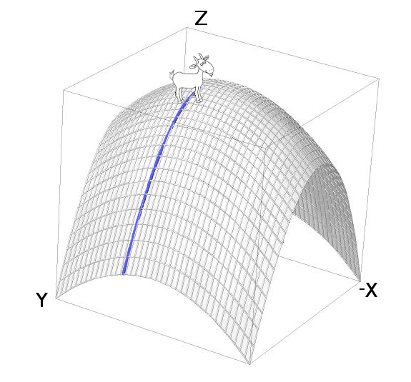

| Instructor: | Dr. Sebastián Barbieri |
| Email: | |
| Office Hours: | Tuesday 16:00-18:00 LSK300B |
| Lectures: | Tuesday, Thursday and Friday 10:00-11:45 - Wednesday 10:00-10:50. location: HENN-202 |
Information about the textbook, the topics, the marking scheme, and policies can be found in the
Course Outline.
A detailed weekly syllabus is given below.
This course is using UBC's new Canvas system
We are using "APEX Calculus, Version 3.0, Volume 3 (Chapters 9 - 13)". An electronic copy of this book is available online at no cost from http://www.apexcalculus.com.
For further exercises to practice we also recommend Multivariable Calculus, Stewart, 7th Ed. Having this book is NOT mandatory and is only meant as a source of extra excercises. These will not be collected nor marked for credit.
There will be five written homework assignments, due on Thursdays (May 24/31 and June 7/14/21) by the beginning of the lecture.
Grade change requests: Any requests to reconsider grades (homework, midterm, etc) should include the regrade request form.
Email sent without "253" in the subject is very likely to be ignored.
Lectures notes come in chronological order, but they do not correspond to each lecture exactly. Check the syllabus for more details.
The notes are loosely based on a set of lecture notes by Slade.
Lecture 01 L01You are encouraged to do lots of problems, this is the best way to learn the subject.
Homework will include material up to the last Friday before the due date. Do not leave it for the last moment.
Introduction, three dimensional coordinate systems, vectors, dot product (10.1 [first 3 pages], 10.2, 10.3)
Cross product, equations of lines and planes, equations of curves and their tangent vectors (10.4, 10.5, 10.6)
Cylinders and quadric surfaces (11.1, 11.2)
Due Thursday May 24 11:45am: Written Assignment 1: HW1 Solutions.
Practice problems from our text, "APEX Calculus":
10.1: 7, 9, 11;
10.2: 2, 3, 7, 11, 21, 23;
10.3: 5, 7, 15, 17, 21, 27;
10.4: 7, 13, 15, 17, 21, 31, 33, 35;
10.5: 5, 9, 15, 19, 25, 27, 29, 31;
10.6: 3, 7, 9, 13, 19, 25, 27, 29.
Additional practice problems from "Multivariable Calculus, Stewart, 7th Ed":
Ste12.1: 1-15 (odd), 19a, 23, 27, 29, 33, 35, 37, 41, 43;
Ste12.2: 1, 3, 5, 9, 11, 13, 19-31 (odd), 35, 37, 39, 41;
Ste12.3: 1, 3, 5, 7, 11, 13, 15, 19, 23, 25, 27, 35, 37, 47, 57;
Ste12.4: 1, 3, 7, 9, 11, 15, 23, 25, 41;
Ste12.5: 1, 3, 5, 13, 19, 25, 27, 31, 33, 43, 45, 49, 57, 61.
Cylinders and quadric surfaces continued, functions of several variables (10.1, 12.1, 12.2)
Partial derivatives, tangent planes, the differential, and linear
approximation (12.3, 12.4).
Note the APEX Calculus doesn't do tangent planes until 12.7; we'll
see them again in that style but I think its useful to see them now
because of the close connection linear approximation).
Supplemental notes on Partial Differential Equations (also available as a Jupyter notebook). Includes a few relevant practice problems.
Note: In 12.2, epsilon-delta arguments of continuity are not examinable.
Due Friday June 1 11:45am: Written Assignment 2: HW2 Solutions.
Practice problems from "APEX Calculus":
10.1: 15, 17, 21, 23, 25, 27, 29, 31;
12.1: 7, 10, 11, 13, 15, 17, 19, 21, 23, 27, 29, 31;
12.3: 7, 9, 11, 13, 19, 25, 27, 29, 31, 33;
12.4: 5, 7, 9 (in these first three problems, also give an expression for the tangent plane), 13, 15, 17, 21.
Additional practice problems from "Stewart":
Ste12.6: 1-9 (odd), 11, 13, 15, 21-28, 29, 33, 35, 41, 50;
Ste14.1: 1, 3, 5, 11-19 (odd), 23, 30, 35, 37, 39-45 (odd), 55, 57, 59, 61, 63;
Ste14.3: 1, 3, 5, 7, 9, 11, 15-37 (odd), 39, 41, 43, 45, 47, 49, 51-67 (odd), 71, 72, 73, 81, 87;
Ste14.4: 1-5 (odd), 11, 13, 15, 17, 19, 25, 27, 29, 31, 33, 37, 41.
Chain rule, directional derivatives and gradient (12.5, 12.6)
Tangent planes via the normal, Maximum and minimum values, Lagrange multipliers (12.7, 12.8).
Practice problems from "APEX Calculus":
12.5: 7, 11, 13, 17, 19, 21, 23, 25, 27;
12.7: 1, 9, 11, 13, 15, 17, 19 21, 23;
12.8: 1, 2, 7, 11, 13, 15, 17.
Additional practice problems from "Stewart":
Ste14.5: 1-11 (odd), 13, 17, 19, 21, 23, 25, 27-33 (odd), 35, 39, 45, 51, 53;
Ste14.7: 1, 3, 5-17 (odd) [find critical values only], 19, 29-35 (odd), 39, 41, 43, 45, 47, 49, 51;
Ste14.8: 1, 3-17 (odd), 19, 25, 27-39 (odd), 41.
Due Thursday June 7 11:45am: Written Assignment 3: HW3 Solutions.
Midterm 1, Wednesday May 30, held in class. Solutions to Midterm 1.
You must write the test in the section in which
you are registered, and bring your UBC ID card.
No aids of any kind are permitted during the test (no calculators, papers, etc.)
Midterm will cover up to and including Section 12.4, as documented in the weekly schedules above. Midterm problems will be of the sort you have seen
in the written assignments and in practice Problems
up to and including Section 12.4.
Additional practice material for Midterm 1:
Here are some old homework assignments with solutions. Not all their problems are relevant, the relevant
problems are as follows:
# 3, 5, 7, 8 of Set 1,
# 1, 2, 3, 4, 5, 6, 7 of Set 2,
# 2, 3, 4, 5, 6, 7 of Set 3,
# 1, 2, 8, 11 of Set 4.
Here are some midterms from previous years:
Midterm 1 2012,
Solutions to Midterm 1 2012,
Midterm 1 2013,
Solutions to Midterm 1 2013,
Midterm 1 2014,
Solutions to Midterm 1 2014,
Midterm 1 2015,
Solutions to Midterm 1 2015,
Midterm 1 2016,
Solutions to Midterm 1 2016,
Midterm 1 2017,
Solutions to Midterm 1 2017,
Midterm 1 2018,
Solutions to Midterm 1 2018.
Lagrange multipliers, double integrals over rectangles, iterated integrals and double integrals in general domains (13.1, 13.2).
Note: Lagrange multipliers not covered in the APEX text; see pages 378--383 of this textbook by David Guichard.
Due Thursday June 14 11:45am: Written Assignment 4: HW4 Solutions.
Practice problems for Lagrange Multipliers:
From Guichard text above, Sec 14.8, pg 382/383: 5, 10, 11, 12, 13, 15.
Practice problems from "APEX Calculus":
13.1: 5, 6, 11;
13.2: 1-4, 5;
13.1: 7, 9, 19, 21;
13.2: 1-4, 7, 9, 13, 17, 21, 25.
Additional practice problems from "Stewart":
Ste15.1: 3a, 11, 13, 17;
Ste15.2: 1-21 (odd), 25, 27, 29, 35;
Ste15.3: 1, 3, 5, 7-27 (odd), 31, 39-49 (odd), 51, 55.
Double integrals in polar coordinates, applications and surface area (13.3, 13.4, 13.5).
Applications of double integrals continued (13.4);
Moments of inertia are mentioned briefly on pg 790
and in these
supplimental notes
(also as a Jupyter notebook).
Due Thursday June 21 11:45am: Written Assignment 5: HW5 Solutions.
Practice problems from "APEX Calculus":
13.3: 3, 5, 9, 13, 15;
13.4: 5, 6, 13, 14, 15, 22, 23;
13.5: 2, 5, 6, 7, 9, 13, 17, 19.
13.6: 5, 7, 9, 11, 13, 15, 19, 23.
Additional practice problems from "Stewart":
Ste10.3: 1, 3, 5, 7, 9, 11, 15, 19, 25, 29, 31;
Ste15.4: 1, 3, 5, 7-13 (odd), 15, 17, 19-27 (odd), 29, 31, 33, 35, 37;
Ste15.5: 1, 3-9 (odd), 11, 13, 15, 17, 21, 23;
Ste15.6: 1-23 (odd);
Ste15.7: 1-29 (odd), 33, 35.
Midterm 2, Wednesday 13, held in class. Solutions to Midterm 2.
You must write the test in the section in which you are registered, and bring your UBC ID card. No aids of any kind are permitted during the test (no calculators, papers, etc.)
Midterm will cover Sections 12.5 (chain rule) to 13.2 (double integration) (inclusive) but of course relies also on earlier topics. Section 13.3 (double integration in polar coordinates) is not on the midterm.
Additional practice material for Midterm 2:
Here are some old homework assignments with solutions. Not all their problems are relevant, the relevant
problems are as follows:
# 3-7, 9, 10, 12-14, 16, 17 of Set 4,
# 1-4, 5a of Set 5,
# 1-8 of Set 6,
# 1, 2 of Set 7.
Here are some midterms from previous years:
Midterm 2 2012,
Solutions to midterm 2 2012,
Midterm 2 2013,
Solutions to midterm 2 2013,
Midterm 2 2014,
Solutions to midterm 2 2014,
Midterm 2 2015,
Solutions to midterm 2 2015,
Midterm 2 2016,
Solutions to midterm 2 2016,
Midterm 2 2017,
Solutions to midterm 2 2017,
Midterm 2 2018,
Solutions to midterm 2 2018.
Triple integrals, integrals in cylindrical and spherical coordinates.
Note: These topics are not covered in our APEX text; see Section 14.4 of this textbook by Gil Strang.
Practice problems:
Strang14.4 Problems 11, 13, 15, 19, 22, 23 (from the alternative text by Strang, linked above).
Additional practice problems from "Stewart":
Ste15.8: 1-31 (odd);
Ste15.9: 1-35 (odd), 39, 44 (answer=2464).
Final Exam: The final exam will be based on all topics of the course, with around 50%
of the marks devoted to integration.
Here are some old final exams to assist with your studying:
2007,
2009,
2010,
2011,
2012, 2012 Solutions,
2013,
2014, 2014 Solutions,
2015, 2015 Solutions,
2016, 2016 Solutions,
2017, 2017 Solutions,
2018S, 2018S Solutions.
(other solutions are not available). Some solutions need a login; this is the same as the homework solutions.
This page layout has been shamelessly copied from here, with the consent of its author.
Copyright © 2018 Sebastián Barbieri.
Copyright © 2016-2017 Colin Macdonald.
Copyright © 2014-2015 Gord Slade and others.
Verbatim copying and distribution of this webpage is permitted
in any medium, provided this notice is preserved.
However, reproducing some content may require additional permission
from their respective authors.